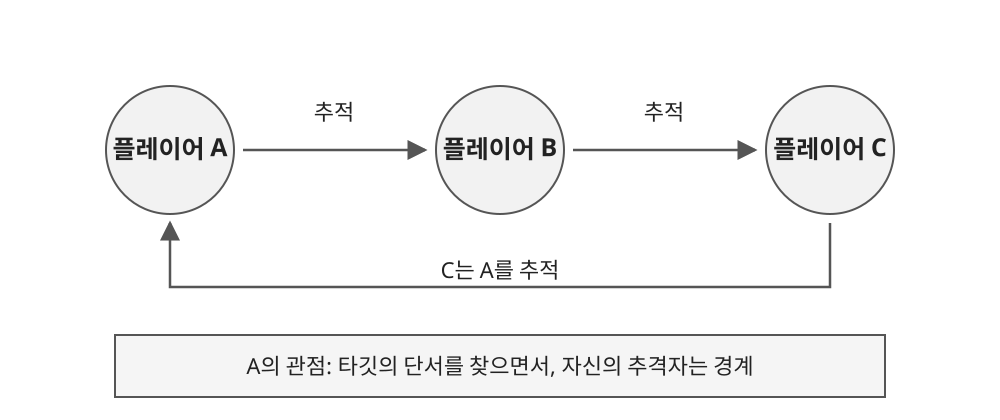

1.1 게임 개요
● 도시형 꼬리잡기
- 지정된 타깃을 찾아 후방으로 접근하고, 꼬리 탈취를 시도하는 3D 소셜 추격 게임.
- 모든 플레이어는 누군가를 추적하는 동시에 다른 플레이어의 타깃이 됨.
- 타깃의 단서를 찾는 행동과 자신의 정체를 숨기는 행동이 함께 발생하도록 설계.

| 구분 | 내용 |
|---|---|
| 플랫폼 | PC |
| 플레이 인원 | 6~8인 목표 |
| 주요 공간 | 골목, 계단, 건물 등 시야와 이동 경로가 교차하는 도시 |
| 목표 행동 | 타깃 탐색 → 후방 접근 → 꼬리 잡기 → 대결 → 탈취 |
| 방어 행동 | 주변 경계 → 추격자 발견 → 도주 → 잡힌 뒤 저항 |
● 핵심 재미와 범위
- 타깃을 찾는 동안 자신의 추격자도 경계하도록 하여, 이동 중에도 주변 인물을 관찰하게 함.
- 꼬리가 잡힌 뒤 대결 단계를 두어 접촉만으로 승패가 끝나지 않도록 함.
- 체력, 무기, 자기장 중심의 난전보다 탐색, 속임수, 추격에 집중.